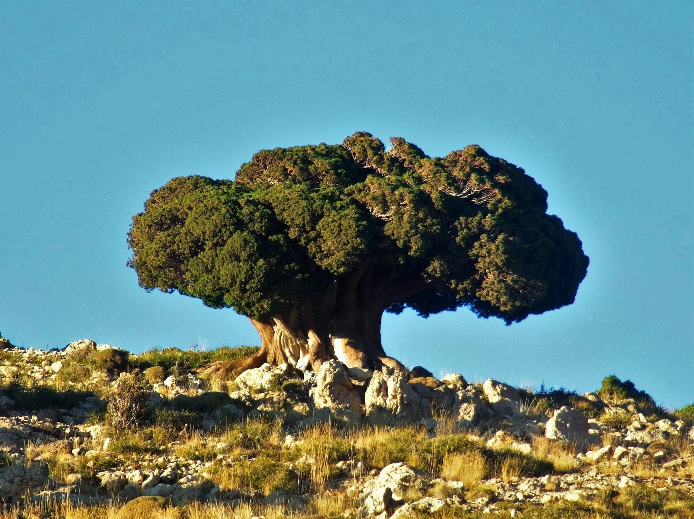
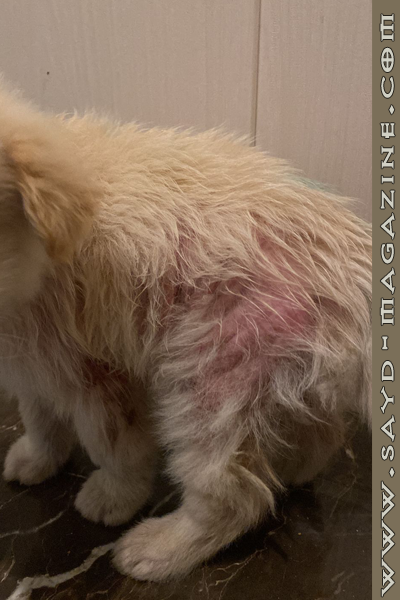

تحدّيات الصيد في لبنان: بين القانون والواقع البيئي
لبنان، المحطة الحيوية على خارطة مسارات هجرة الطيور العالمية، يشهد عبور ملايين الطيور عبره سنويًا في رحلتها بين القارات. لكن لبنان يعاني من تحديات جمّة تتعلق بواقع الصيد في البلاد،…
لبنان، المحطة الحيوية على خارطة مسارات هجرة الطيور العالمية، يشهد عبور ملايين الطيور عبره سنويًا في رحلتها بين القارات. لكن لبنان يعاني من تحديات جمّة تتعلق بواقع الصيد في البلاد،…

شجرة اللزاب في لبنان ينتشر هذا النوع من الشجر على السفوح الغربية والشرقية لسلسلة جبال لبنان الغربية، بين ارتفاعات متفاوتة حسب المنحدرات. لوحظ انتشارها في منطقة وادي نهر ابراهيم، أ…

وجود المرأة في عالم الصيد ليس مجرد موضة زمان ومكان، فالمرأة منذ الآف السنين تركت بصمتها كمحاربة وصيادة و ليست كبديلة عن الرجل بل أصيلة بكل ما للكلمة من معنى. ريتا حبيب الشعار أمّ…
الدرسة سوداء الرأس مفرخ صيفي ومُهاجر شائع جدًّا وواسع الانتشار في مناطق لبنان الجبلية وفي البقاع. تتميز الدرسة سوداء الرأس بذيل طويل ومنقار ثقيل. للذكر رأس أسود، الأجزاء السفلية ص…
مهندسة زراعية برتبة صيادة مسؤولة، تعشق الطبيعة وحضورها يمنع التلوث... ووعيها لقيمة الحياة البرّية وعالم الطيور، جعلها تمارس صيدها بأخلاق عالية بعيدًا عن نهج صيادي الليل، الذين يبح…

يمكن أن تسببها أشياء كثيرة مثل الطفيليات أو الفطريات أو الحساسية. يمكن أن تنتقل الطفيليات والفطريات من الحيوانات الأخرى أو من المنطقة التي يعيش فيها الكلب أو يمر بها. من المحتمل أ…
ورق الغار أو نبات الغار تُعرف بالاسم العلمي Laurus Nobilis، كما أنها تعرف بورق موسى في بعض البلدان العربية. تعتبر أشجار الغار من الأشجار المُعمّرة والدائمة الخضرة، عرفت بشجرة إله…
يعتبر الصيد غير القانوني "الصيد الجائر" مشكلة كبيرة في لبنان. إذ يتم اصطياد العديد من أنواع الطيور المهاجرة والمهدّدة بالانقراض، مثل الجوارح واللقلق الأبيض والترغل وعصفور التين، أ…
الأحداث الكبيرة تُعلِّم الإنسان النظر إلى الأمور بطريقة مُختلفة.. فبعد أن شهدنا منذ فترة في لبنان عدائية كبيرة تجاه الكلاب والقطط والكثير من الحيوانات، من تسميم وتنكيل وقلة اهتمام…
يتواجد طائر الغاق الكبير، أو كما يُعرف أيضًا بغراب البحر في جميع أنحاء العالم تقريبًا. هو طائر أسود كبير الحجم ينتمي إلى فصيلة الغاقيات (Phalacrocoracidae)وهو ليس من فصيلة…
الملح من أفضل الطرق لإنقاذ الكلاب والقطط من السم، أو بحال إبتلاعها أغراضاً غير قابلة للأكل. بحال إبتلاع السمّ من قبل الحيوان في الـ١٥ دقيقة الأولى الملح قد يُنقذه، أما بالنسبة للأ…

بعد موضوع غلاء أسعار الخرطوش والبدائل المتاحة، لا بدّ من التنويه بأن أوّل البدائل المُمكنة هي الصيد بالبنادق الهوائية لرخصها ورخص خرطوشها النسبي. سنبدأ موضوعنا عن البنادق الهوائية…
الورد الجوري من أشهر أنواع الورد وأكثره طلبًا. يتم استخدامه في التزيين أو تبادل الهدايا. وتم إدخاله في بعض الأطعمة، مثل مربى الورد، شراب الورد وشاي الورد. تزدهر ورود الجوري بين فص…
من حكايات الصيد ونهفاته، لا بدّ من مرور طريف على رأي "الزوجات" ومفهومهنّ لرحلات الرجال المتكرّرة والكثيرة في موسم الصيد فكان لـ"صيد" عدّة لقاءات مع "زوجاتهم" إيمندا عودة: "يلا بلّ…
عصفور الرّيح بِالرِّيح... ما بِيهِمّ يِعبو ريشاتي ملِيح وغَنِّج قمِح بِالتِّمّ وزَقزِق بِنَومي وصِيح لِـ مهِمّ مش عم شِمّ ريحِة قفَص بِالرِّيح

"للبحر عالمه!! في المياه نستمتع بمشاهدة الكائنات البحرية والمرجان والكهوف، أما على سطحه نستمتع بهدوء الأُفق، نسترخي تحت أشعّة الشمس، نُحاكي ضوء القمر ونرقص على صوت أمواجه"... هكذا…
البَجَعة البيضاء الكبيرة (أبو جراب) الاسم العلمي: Pelecanus onocrotalus الاسم الإنكليزي: Great white pelican طائر أبيض كبير مع ريش أسود أسفل الجناح، العين قاتمة ومُحاطة بجلد وردي،…
عليك أن تبحث في الشعراء عن عوالمهم المخفية، عن مُغامرات ومَهارات ومزاجات مَطلية بزمنٍ خاصّ، لا يُمكن الوصول إليها إلاّ إذا كنت من الذين يقرأون بين، وفوق وتحت وخارج السطور في آن وا…

الفروسية لا تخضع لمشيئة العمر بل لمشيئة حُبّ التحدي والإرادة القوية.. ولهذا هي نوع من حسابٍ خاص بمُعادلات خاصّة، تُحقّق أهدافها بقفزة ضوء.. لين عراجي بطلة فروسية بتوقيع لبناني وبط…
الكثير من الوزن يُجهد الرئتين ويسبب مشاكل في التنفس. الكثير من الوزن يؤدي إلى أمراض القلب والأوعية الدموية وأمراض القلب. الكثير من الوزن يُسبِّب صعوبة في الحركة، وانخفاضاً في النش…
الاسم : تتكون أشجار الصنوبر البيضاء الشرقية (Pinus strobus) من أوراق خضراء ناعمة تشبه الإبرة، فعرفت بإبر الصنوبر، ويمكن أن تنمو هذه الأوراق من خمس أوراق أوأكثر، وتشكل أغصاناً كبير…
أقام "اتحاد مجموعات الصيد البري في لبنان"، الأحد 9 تشرين الأول 2022 ، يومًا بيئيًا مُخصّصًا لجمع فراغات خرطوش الصيد، وتنظيف الأراضي الزراعية والبريّة. وقد شارك فيه صيادون من وفي م…
بعد أن تسبّبت الدولة بمنع صيد جائر لمدة 20 سنة دون تنظيم، مُنتجة بذلك شريحة كبيرة من القواصين، يقتلون كل ما يطير وبطرق إبادة لا بعقلية صيد مستدام ينسجم مع هواية الملوك. وبعد أن فت…